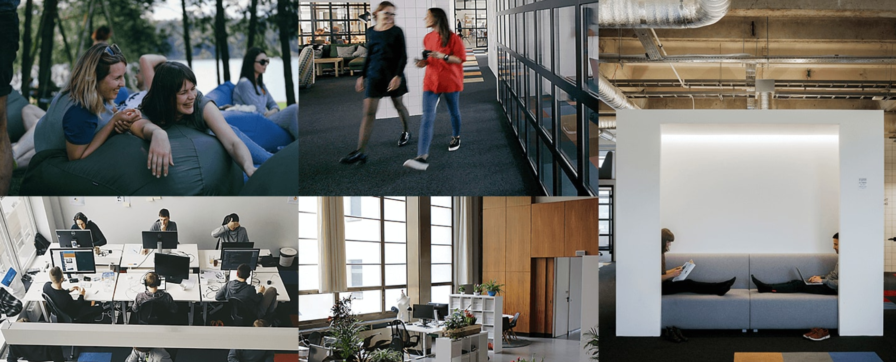
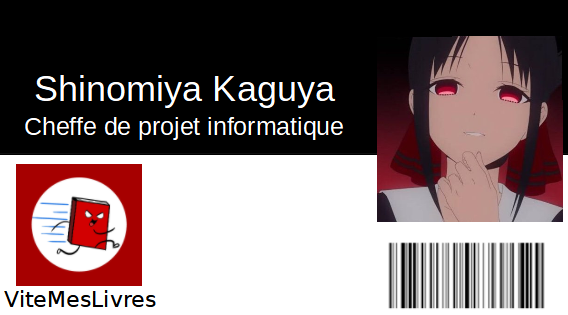
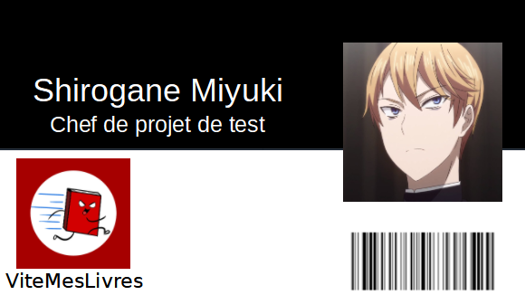

1 simple idée qui rassemble maintenant une grande communauté !
Notre histoire
Nous sommes deux lillois liés par l’amitié depuis la primaire, et nous étions encore étudiants en informatique lorsqu’on a eu l’idée de fonder notre entreprise, en 2015.
Ayant également comme passion commune la lecture, et l’innovation, nous avons créé VitesMesLivres, une plateforme de vente de stock invendu par les librairies indépendantes. En effet, Nous avions réalisé que le destin des livres qui n’arrivaient pas à se vendre n’était pas de finir à la poubelle ! Mais bien de se retrouver dans les mains d’un lecteur qui n’arrivait pas à le dénicher près de lui.
Nous exerçons, en plus d'être tous les deux co-directeurs, le métier de Cheffe de projet informatique, et chef de projet de test. Nous menons avec notre équipe la croissance de ViteMesLivres au quotidien, tout en restant fidèle à nos valeurs et à nos engagements.
Les dirigeants
 Notre équipe
Aujourd’hui, plus de 800 personnes travaillent chez VitesMesLivres pour aider des dizaines de librairies à vendre des livres que des milliers de lecteurs et lectrices à travers toute la France dévoreront dans leurs mains et exposeront avec fierté dans leurs étagères. Nous partageons ensemble les mêmes valeurs, que nous essayons tous de transmettre dans notre travail.